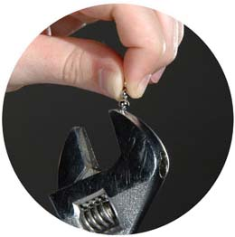

Сильные магниты
Самый сильный в мире природный
магнит – неодимовый магнит – состоит из
редкоземельных сплавов неодима, железа и бора (NdFeB).
Сплав
неодим был открыт в 1885 году австрийским химиком Карлом
Ауэром фон Вельсбахом.
Месторождением
с большим количеством неодима является Китай, который является
основным экспортёром и производителем неодима.
Неодимовые
магниты делят на классы по силе притяжения, которые
обозначаются буквами и числами (например №50, чем выше
числовой номер, тем магнит сильнее). Магнит 60мм в диметре и
30мм толщиной способен выдержать груз массой более 140кг.
Отдельными экземплярами можно поднимать грузы до 400
килограмм.
Также
магниты имеют марки которые определяют максимальную
температуру для нормального функционирования: марка N –
рабочая температура до 60-80 градусов, марки M и H до 120,
марка SH – 150, UH – 180, марка EH до 200 градусов Цельсия.
При превышении указанных температур магнитные свойства
теряются навсегда, восстановить магнит можно только
перемагничиванием на специальном оборудовании. Для
восстановления свойств магнита его нагревают выше точки Кюри
(350 градусов) а затем охлаждают в сильном магнитном поле.
Отрицательные температуры обычно не оказывают никакого влияния
на магниты. За 10 лет с момента изготовления неодимового
магнита он теряет не более 2х процентов намагниченности.
Поверхность бытового магнита обычно покрывают защитным слоем
из никеля.
Факты: для здоровья вредно длительное время держать магнит, т.к. он может вызвать повышение кровяного давления. Соединения неодима применяют в сельском хозяйстве для ускорения всхожести семян.